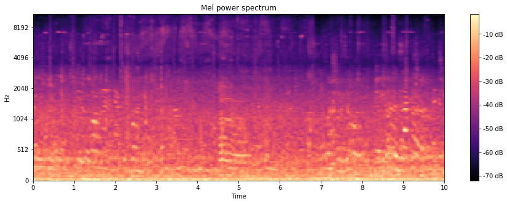
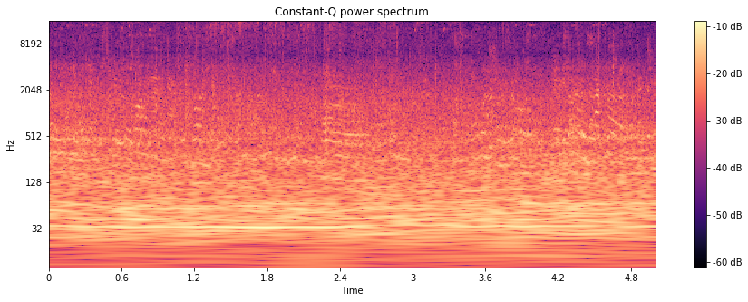
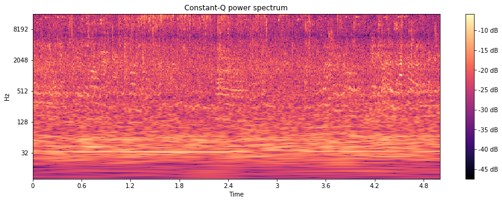
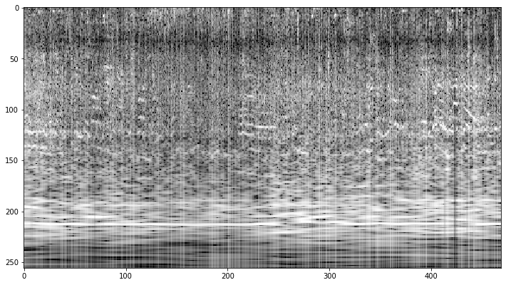
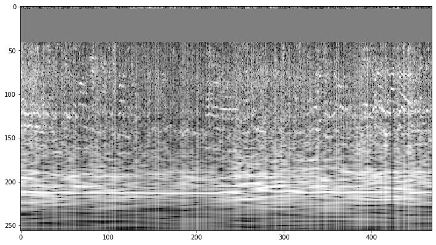
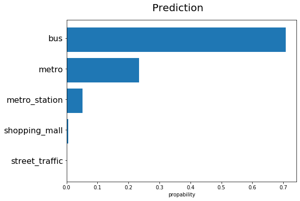

Acoustic scene classification
"Darling, where are you?" may sound a bit catchy but it describes well what acoustic scene classification is about.
When interacting with mobile devices we expect relevant information to be presented with a minimum of input effort. What is relevant depends on the context in which we are acting.
If we are requesting a route information while sitting at a bus stop we most probably are looking for directions for travel via a bus, while at a railway station we most probably are looking for a train connection.
One possibility for a device to identify the context is via geolocation information. But this information may not be available inside buildings. An alternative approach is the analysis of ambient noise. This approach is referred to by the term acoustic scene classification.
Acoustic scene classification (ACS) describes the "capability of a human or an artificial system to understand an audio context, either from an on-line stream or from a recording." (http://www.cs.tut.fi/sgn/arg/dcase2016/documents/workshop/Valenti-DCASE2016workshop.pdf)
This blog demonstrates how convolutional neural networks can be used for the identification of settings in which an audio file was recorded. We will be applying a pre-trained VGG-16 network with a custom classifier applied on log-frequency power-spectrograms.
Data analysis and preparation
This project uses recordings made available as part of the DCASE (Detection and Classification of Acoustic Scenes and Events) 2019 challenge (http://dcase.community/challenge2019/task-acoustic-scene-classification). The TAU Urban Acoustic Scenes 2019 development dataset contains recordings in 10 different settings (airport, indoor shopping mall, metro station, pedestrian street, stree traffic, tram, bus, metro, park) recorded in 10 cities. Each recording is 10 seconds long. The data files can be downloaded from https://zenodo.org/record/2589280.
There are a total of 14400 recordings with 1440 recordings for each of the 10 settings.
Here is a sample (street_pedestrian-lyon-1162-44650-a.wav).
Spectrograms
To analyze the audio files we can transform them into spectrograms (cf. https://en.wikipedia.org/wiki/Spectrogram). These show the frequency distribution for subsequent short time intervals.
Mel spectrograms
A popular form of spectrograms are Mel spectrograms. The Mel scale is based on what humans perceive as equal pitch differences. The Mel scale defines how the frequency axis is scaled:
The result of the scaling is that for high frequencies the scale is proportional to the logarithm of the frequency while low frequency (especially below 700 Hz) are compressed.
This scale is widely used for speech analysis.
In a power spectrogram the strength the amplitude of the frequncies is shown on logarithmic scale (in Decibel).
Here is the Mel power spectrogram for the sound file above.

Looking at the spectrogram we find:
- Most of the audio power is concentrated on low frequencies.
- A lot of the structure that we can see is in the low frequencies.
- High frequencies seem to be filtered out.
Ambiant sound can contain a lot of low frequency sounds, e.g.
- Automobile motors run at 600 - 6000 rpm. With four cylinders that results in a 40 - 400 Hz exhaust frequency.
- Ventilators typically run at 750 - 3000 rpm.
These are the frequencies that are compressed by the Mel scale.
When the running speed of machines is changed this will move much of the sound spectrum by the same factor. While the Mel scale distorts this shift for low frequencies the spectrum would be simply translated along the frequency axis on a pure logarithimic scale by the same distance.
So using a logarithmic scale for the the analysis seems more appropriate.
Log-frequency spectrograms
Here is the log-frequency power spectrogram (also referred to as constant-Q power spectrogram) for the audio file above:

This looks more appropriate for our classification task:
- With the log-frequency spectrogram the structure of low frequency sound is clearly visible.
- The audio power is more evenly distributed over the frequency intervals.
Yet high frequencies are still underrepresented.
Pre-emphasis
The high frequencies can be emphasized using a filter
(as suggested by Haytham Fayek, Speech Processing for Machine Learning: Filter banks, Mel-Frequency Cepstral Coefficients (MFCCs) and What's In-Between).
With α = 1485 Hz the sound sample sounds like this:
And the power is much more evenly distributed the frequencies:

Modeling
For feeding a neural network the spectrograms can be saved as black and white images with the brightness representing the logarithm of the power.

The number of recordings per setting are rather small in our data set. To avoid over-fitting data augmentation should be applied.
Data augmentation
For image data a large variety of transformations can be used for augmentation. These include for instance random resized cropping, rotations, and flipping (for more transformations see https://github.com/aleju/imgaug).
Not all make sense for spectrograms, e.g. rotations. Reasonable transformations are:
- changes in pitch
- changes in tempo
- translation in time (aka. time warping)
In SpecAugment: A Simple Augmentation Method for Automatic Speech Recognition, Zoph et.al suggest to randomly mask frequency bands for the purpose of augmentation.

Neural network
For image recognition pre-trained networks can be used. The VGG16 model (Karen Simonyan, Andrew Zisserman, Very Deep Convolutional Networks for Large-Scale Image Recognition was chosen. A classifier with one hidden layer of 512 nodes was added and only the classifier parameters were trained. The data set had been split using a 60:20:20 ratio per setting-city combination. The Adam optimizer was applied with a .001 learning rate. Both autgemtation techniques describe above were used. 10 subsequent epochs not improving the accurary on the validation set were used as the termination criterion.Hyper parameter tuning
A grid search was used to find good values for- the length of the time sub-interval used for time warping
- the width of the frequency band to be randomly masked
| frequency band masked | |||
|---|---|---|---|
| time window | 0 % | 10 % | 20 % |
| 3 s | 60.2±0.8 | 58.7±0.2 | 58.2±0.6 |
| 5 s | 71.2±0.8 | 70.8±0.0 | 69.5±0.8 |
| 7 s | 63.6±1.7 | 62.9±2.4 | 64.6±0.7 |
Results
Augmentation via frequency band masking was not beneficial for accuracy.
An accuracy of 69.7 % for the test set was achieved using the tuned parameters (a time windows of 5 seconds for time warping withing the 10 second recordings, no frequency band masking).
The confusion matrix shows that the separation of the different audio settings differs a lot. While the bus setting was well recognized the public square and pedestrian street settings were not easily separable.
| airport | bus | metro | metro station | park | public square | shopping mall | pedestrian street | street traffic | tram | |
|---|---|---|---|---|---|---|---|---|---|---|
| airport | 217 | 0 | 3 | 3 | 0 | 22 | 34 | 11 | 0 | 0 |
| bus | 1 | 255 | 21 | 0 | 0 | 0 | 0 | 1 | 2 | 10 |
| metro | 6 | 15 | 202 | 21 | 1 | 2 | 0 | 1 | 0 | 41 |
| metro station | 33 | 4 | 39 | 158 | 0 | 15 | 14 | 11 | 5 | 11 |
| park | 4 | 0 | 0 | 0 | 244 | 27 | 0 | 6 | 6 | 3 |
| public square | 18 | 1 | 1 | 6 | 13 | 182 | 12 | 42 | 15 | 0 |
| shopping mall | 37 | 0 | 3 | 9 | 0 | 10 | 210 | 19 | 1 | 1 |
| pedestrian street | 35 | 1 | 2 | 9 | 5 | 58 | 19 | 152 | 6 | 2 |
| street traffic | 2 | 1 | 0 | 4 | 14 | 48 | 1 | 10 | 209 | 1 |
| tram | 4 | 21 | 54 | 13 | 3 | 1 | 0 | 3 | 1 | 190 |
This model now can be used for predictions. Can you identify the setting of the following recording by listening?
This is the prediction by the model:

The model itself can be found in https://github.com/xypron/acoustic_scene_classification.
Conclusion
A workflow for classifying ambiant sound was demonstrated:
- correcting sound quality by using a pre-emphasis filter
- convert sound files to spectrograms
- split the dataset into training, validation, and testing data
- train a convolutional neural network using data augmentation
- use the trained network for prediction
Though a network was used that is not specifically built for this classification task respectable accuracy rates were be achieved.
Directions for further investigation could be
- an extended grid search to further optimize the parameters of the augmentation transforms
- testing further augmentation techniques like adding noise
- design of a more specific neural network.